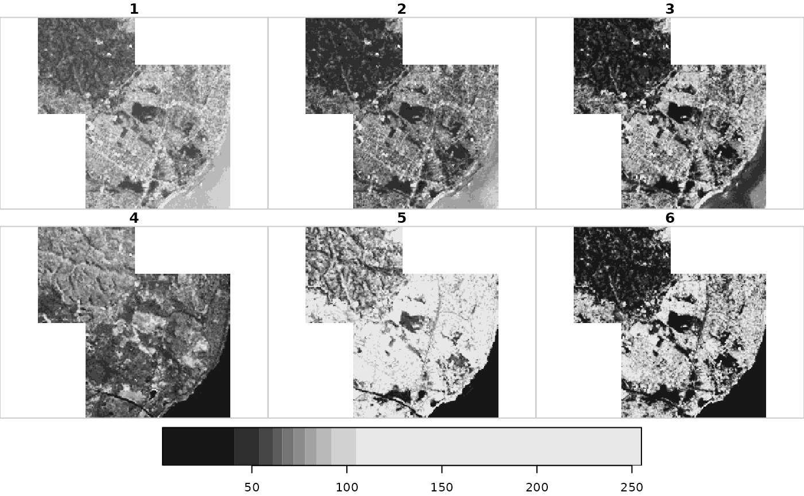

R/mosaic.R
st_mosaic.Rdbuild mosaic (composite) of several spatially disjoint stars objects
st_mosaic(.x, ...)
# S3 method for stars
st_mosaic(
.x,
...,
dst = tempfile(fileext = file_ext),
options = c("-vrtnodata", "-9999", "-srcnodata", "nan"),
file_ext = ".tif"
)
# S3 method for character
st_mosaic(
.x,
...,
dst = tempfile(fileext = file_ext),
options = c("-vrtnodata", "-9999"),
file_ext = ".tif"
)
# S3 method for stars_proxy
st_mosaic(
.x,
...,
dst = tempfile(fileext = file_ext),
options = c("-vrtnodata", "-9999"),
file_ext = ".tif"
)object of class stars, or character vector with input dataset names
further input stars objects
character; destination file name
character; options to the gdalbuildvrt command
character; file extension, determining the format used to write to (".tif" implies GeoTIFF)
the stars method returns a stars object with the composite of the input; the character method returns the file name of the file with the mosaic; see also the GDAL documentation of gdalbuildvrt
the gdal function buildvrt builds a mosaic of input images; these imput images can be multi-band, but not higher-dimensional data cubes or stars objects with multiple attributes
uses gdal_utils to internally call buildvrt; no executables external to R are called.
x = read_stars(system.file("tif/L7_ETMs.tif", package = "stars"))
x1 = x[,100:200,100:200,]
x2 = x[,150:300,150:300,]
plot(st_mosaic(x1, x2))
